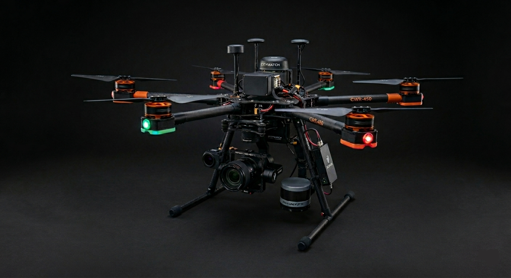
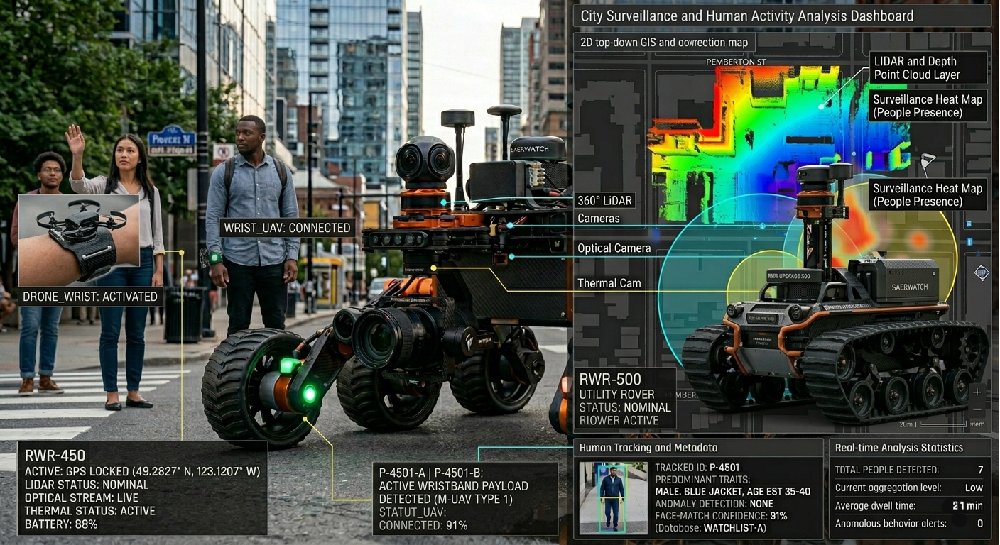
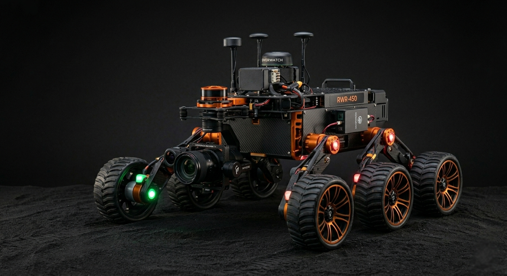

Rapidly expanding Indian metropolises are collapsing under reactive maintenance. civiqSync deploys an autonomous AI network of drones, robots, and IoT wearables to map, predict, and prevent structural and utility failures before they happen.
Modern Indian cities are built on aging matrices. When sudden monsoon pressure hits Chennai, or unregulated deep-soil hydration strikes Mumbai, traditional management discovers the damage hours after it destroys a street, pipeline, or bridge. Waiting for human crisis reports costs lives and depletes municipal resources exponentially faster than proactive action.
In 2025 across major Indian cities, reactionary utility and infrastructure damage response costs exceeded ₹25,000 Crores annually.
Like the human body routing pain to the brain instantly to prevent deeper lacerations, civiqSync weaves a continuous neurological map of the urban environment. Unlike fragmented legacy SCADA systems and sluggish municipal hotlines, our unified AI mesh autonomously tracks and mitigates distress signals across thousands of miles of concrete in true real-time.
Navigating roads nightly. Equipped with 360-LiDAR, GPR (Ground Penetrating Radar), and hypersensitive gas detectors specifically searching for subterranean pipe leaks and early-stage structural sinkhole pockets beneath asphalt.
Fully autonomous Drone Swarms performing localized sweep patrols over structural blindspots. Utilizing YOLOv8 Computer Vision layers to identify stress fractures in bridges, illegal construction, flood-prone blocks, and fire hotspots.
Optional low-power IoT wearables passively collecting and broadcasting hyper-local AQI, thermal disparities, and ground vibration metrics. Turning every citizen into a silent sensor creating an impossible-to-replicate data scale advantage.
civiqSync handles physical sensing, data transmission, and computational orchestration vertically.
Edge-compute clusters process camera streams directly on the drone chassis, dispatching only critical meta-flags via 5G core to the server to prevent API bottlenecking.
Problem: Underground pipes erode local soil.
Detection:
Rover GPR logs density drop.
Outcome: Area sealed and piped repaired 6 days
before collapse.
Problem: Commuter bridge stress buildup.
Detection: UAV
visual sweeps log micro-cracks over 3 months.
Outcome: Preventative beam
reinforcing executed, preventing disaster.
Problem: Unknown methane emissions.
Detection: IoT Wearables
trigger sudden local AQI warnings.
Outcome: Drones deployed within 3 mins;
leak isolated successfully.
Problem: Transformers prone to fire.
Detection: Aerial
thermal mapping spots +10°C anomaly.
Outcome: Load rebalanced automatically;
hardware saved.
Problem: Unpredicted terrain pooling.
Detection: Rovers map
real-time water elevation.
Outcome: Live rerouting of emergency vehicles via
Mobile App.
The civiqSync Operations Matrix brings unprecedented clarity. Officials use an interactive isometric 3D map that aggregates millions of data points into a single intuitive feed. Featuring Predictive Heatmaps, auto-generated PDF reports, and smart one-click repair dispatches via Webhook to legacy municipal CRM systems.
Identified anomalies route directly to field workers instantly.
Avoiding catastrophic road and structural collapses saves billions.
By securing bridges and limiting gas/flooding damage safely.
Adopt the network without crippling upfront capex constraints. Target customers include Smart City Municipalities (e.g. BMC, GCC), private gated townships, and large-scale industrial megacorporations.
We are currently operating via extensive private pilot tests.
Securing 3 paid municipal beta tests across tier-2 cities. Expanding predictive AI pipelines specifically for heavy monsoon water channeling paths.
Mass manufacturing Citizen Mesh Wearable v1. Deploying 50 ground rovers to establish India's first fully 24/7 tracked Smart Transport corridor.
Packaging the API. Allowing external autonomous vehicle platforms to license the civiqSync mesh density network for safer global self-driving navigation.
Governing city-wide data is not taken lightly. The architecture prioritizes anonymized encryption at the absolute lowest root node level.
NETWORK STATUS: SECURE
Don't wait for your infrastructure to break before you notice it exists. Join the most powerful urban intelligence network available.